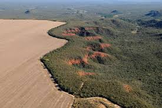

Proteja
XXXXXXXXX
XX
Voluntáries continuam na luta contra
o desmatamento da Amazônia
o desmatamento da Amazônia
“A floresta, e nosso futuro, está sob ameaça para dar lugar à grilagem, pecuária, garimpo, extração ilegal de madeira e invasão de áreas protegidas por lei.”
XXXXXXXXXX
XX
Greenpeace Brasil
Você sabia que a Floresta Amazônica é importante para todo
o equilíbrio climático do Brasil e do mundo? Ela também é a
morada de diversas comunidades indígenas brasileiras e abrigo para várias espécies de animais.
XXXXXXXXX
XX
Desmatamento no Brasil
Estima-se que desde 1970, o Brasil já perdeu 18% das suas florestas por conta do desmatamento. Em tamanho, esse valor equivale ao território dos estados Rio Grande do Sul, Santa Catarina, Paraná, Rio de Janeiro e Espírito Santo.
XXXXXXXXXX
XX

Planeta perde 11 campos de futebol de florestas por minuto.
As florestas tropicais dizimadas em todo planeta, apesar dos apelos pelo fim do desmatamento. Somente em 2022, o globo perdeu área equivalente à
Suíça 4,1 milhões de hectares de florestas úmidas, a uma velocidade proporcional a 11 campos de futebol por minuto.
Seja uma Criança
Tenha Conciência
Cuidar do planeta,
é cuidar de se proprio.